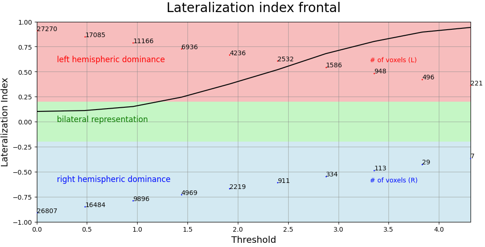

LateralizationIndexCurve brick¶
Compute iteratively the lateralization of activation in functional MRI data.¶
The lateralization index (LI) as implemented here relies on the basic computation LI = (Left - Right) / (Left + Right). Therefore, a negative value indicates a right hemispheric dominance and a positive value indicates a left hemispheric dominance.
Here an iterative approach is used. It will compute LIs at up to 20 equally-spaced thresholds.
It is a python adaptation of the part ‘Iterative (LI-curves)’ of the SPM LI-toolbox (Matlab), an integrated software package allowing for the investigation of laterality effects in imaging data.
If you are using this brick please cite: Wilke M & Lidzba K: LI-tool: A new toolbox to assess lateralization in functional MR-data, J Neurosci Meth, 2007, 163: 128-136.
Please note that, for this brick, the miaresources package should be added to Mia Preferences.
Example of curve obtained:
{kind=link}
Mandatory inputs parameters:
- in_file (a string representing an existing file)
Input image (valid extensions: [.nii, .nii.gz]). Image from which signals have been extracted.
ex. '/home/username/data/raw_data/sub-001_bold.nii'
- ROI (a list of string among frontal, temporal, parietal, occipital, cingulate, central, cerebellar, gray matter)
List of the ROI.
ex. ['temporal', 'frontal']
Outputs parameters:
- out_png (a list a pathlike object or string representing a file)
Out png files.
ex. [/home/username/data/derived_dat/patient/stats_gene/spmT_0002_LI_frontal.png, /home/username/data/derived_dat/patient/stats_gene/spmT_0002_LI_temporal.png]
Useful links: